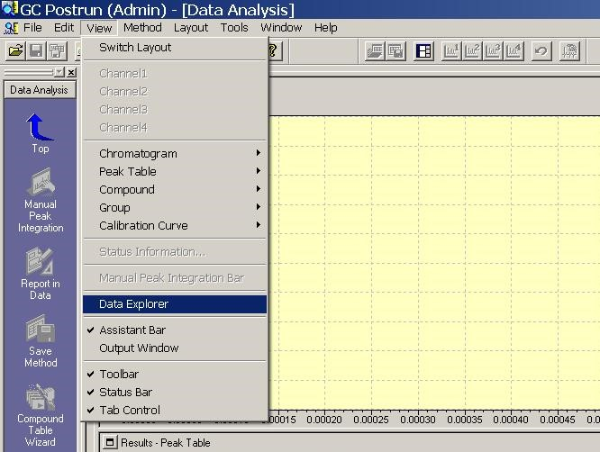
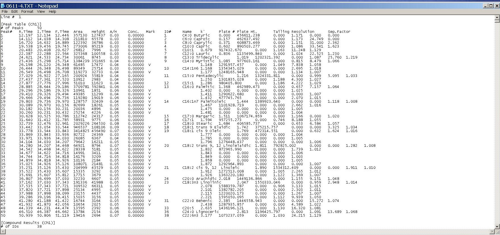

This program processes a data file from a Shimadzu GC, extracting the areas of specified fatty acids for further ratio analysis. The GOST 32261 standard establishes norms for the ratios of free fatty acids to determine the presence of fats of plant origin. The chromatographic method should specify the retention times of peaks of free fatty acids, whose names contain at least those:
To compile the program with icon, execute the following commands:
windres resource.rc -O coff -o resource.res
gcc ratio_checker.c resource.res -o ratio_checker.exe
The program calculates various ratios of fatty acids based on GOST 32261
| Ratio | Range |
|---|---|
| C16:0 : C12:0 | 5.8 - 14.5 |
| C18:0 : C12:0 | 1.9 - 5.9 |
| C18:1 : C14:0 | 1.6 - 3.6 |
| C18:2 : C14:0 | 0.1 - 0.5 |
| C18:1 + C18:2 : C12:0 + C14:0 + C16:0 + C18:0 | 0.4 - 0.7 |
Open the Postrun program with the Data Explorer panel
Navigate to the desired directory -> select .gcd files -> File Convert -> Data file to ASCII file...

Press OK

.txt files will appear in the working directory. Each file will contain chromatography data of a single analysis
You can perform calculations by command <path_to_project_folder>/ratio_checker.exe <path_to_file_folder>/<file_name>.txt or simply drag and drop a .txt file onto the program icon
OR just use GUI application for Windows! Compile it with command
gcc ratio_checker_gui.c resource.res -o "Ratio checker.exe"